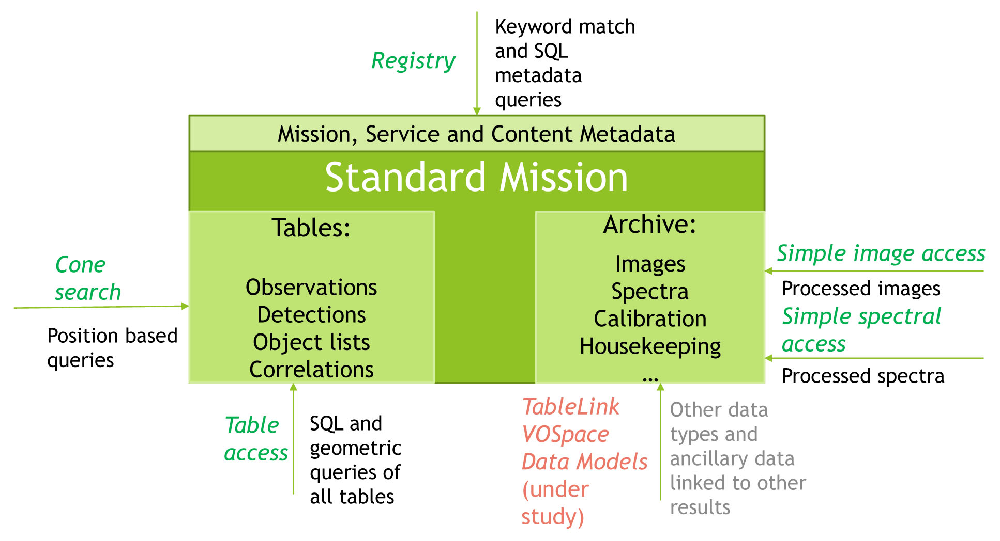

+ Go to a comprehensive listing of resources by mission.
The page summarizes the Virtual Observatory (VO) capabilities of NASA astronomical archives. You can also see a comprehensive listing on the resources page. The Virtual Observatory is a set of data services that have adopted standards to facilitate the dissemination of astronomical data, using rules agreed upon by the International Virtual Observatory Alliance (IVOA). Data can now be acquired using protocols which allow users to retrieve data in VOTable formatted xml files. This system provides an alternative to data extraction via conventional astronomical catalog interfaces.
The NAVO collaboration has developed framework to use VO interfaces to provide comprehensive and consistent access to NASA data. This interface concept is described in our presentation to the 2016 SPIE while the specific implementations are noted in this page and the linked mission table.
|  This figure illustrates the the standard model the NAVO team has defined for publishing a mission in the virtual observatory. |
HEASARC - VO access to all HEASARC catalog information is built into the standard HEASARC infrastructure. Over 800 catalogs are queryable through VO Cone Search and the Table Access Protocol. VOTable format returns are supported through all of our interfaces not just VO protocols. There is currently no VO access to data on a per observation basis. VO access to many survey data sets, including surveys generated from entire mission observations, is available through our SkyView Virtual Telescope facility. This supports Simple Image access queries to all included surveys. Information about VO resources at the HEASARC is published using a VO publishing registry which is updated periodically using semiautomatic processes.
The HEASARC provides access to a variety of types of tables including mission master tables, instruments tables, object tables, and domain master catalogs. SkyView provides access to a variety of all-sky and more limited survey datasets in all wavelength regimes from radio through gamma rays. Catalog access is provided through the VO Cone Search and Table Access Protocols. More information on the HEASARC's services can be found here.
IRSA - IRSA offers program-friendly interfaces to all of its holdings. Through an Application Program Interface (API), users can access IRSA data directly (within a script or on the command line) without the need to go through interactive web-based user interfaces. Each API is a set of programming instructions for accessing one of IRSA's services. These APIs allow users to write software that can talk to IRSA's software to carry out queries and download data, with no user intervention.
The program interface involves constructing URL queries. The commands wget and curl are commonly used for automating these queries, so API users may wish to begin by installing one of these packages. The IDL astro library also includes a routine to query IRSA catalogs through IDL. Detailed instructions are available for catalogs, images, spectra, and dust extinction.
MAST - MAST is working to make its data compliant with the current VO standards. Data holdings can be searched using HTML search forms and applications such as Aladin, Datascope, and Specview, and also using HTTP GET requests, allowing the search parameters to be included in the URL. Many examples can be found on the MAST Web Services page.
MAST mission data collections are available through several standard VO Services, these are primarily used to support spatial position searches: Cone Search, Simple Image Access (SIA), Simple Spectral Access (SSA). MAST is currently in the process of completing the development of Table Access Protocol (TAP) services.
NED - NED is a comprehensive database of multiwavelength data for extragalactic objects, providing a systematic, ongoing fusion of information integrated from hundreds of large sky surveys and tens of thousands of research publications. The contents and services span the entire observed spectrum from gamma rays through radio frequencies. As new observations are published, they are cross-identified or statistically associated with previous data and integrated into a unified database to simplify queries and retrieval. Seamless connectivity is also provided to data in NASA astrophysics mission archives (IRSA, HEASARC, MAST), to the astrophysics literature via ADS, and to other data centers around the world.
Objects can be queried By Name, Near Name or Near Position (cone search), and With Unprocessed Catalog Sources (to include very large catalog sources that are not yet cross-matched with NED objects). Galaxy samples can be constructed By Parameter constraints on Sky Area, Redshift, Flux Density (Magnitude), Object Types, and Survey Names, or by galaxy Classifications and Attributes, or By Reference Code. References can be queried By Author and By Object Name. There is a standard WWW interface for searching objects, references, and data in NED.
+ Go to a comprehensive listing of resources by mission.
A general summary of NAVO is presented in our ADASS poster from October 2015. The annual report on the state of NAVO archives was released on February 2015 and our initial plan for implementation of a common interface was given in June 2015.
| <-- Previous | Next --> |